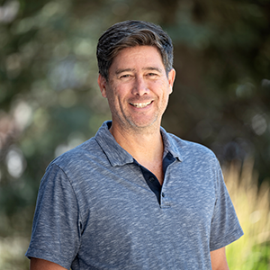

Editor, Online and Digital Strategy

Scott Kaniewski
Scott Kaniewski is an award-winning journalist who has been editing and writing for more than two decades. His extensive experience also includes working with various content management systems, branding, social media, marketing, and page design for both digital and print media. When he's not working, he loves spending time with his two kids and biking and skiing.